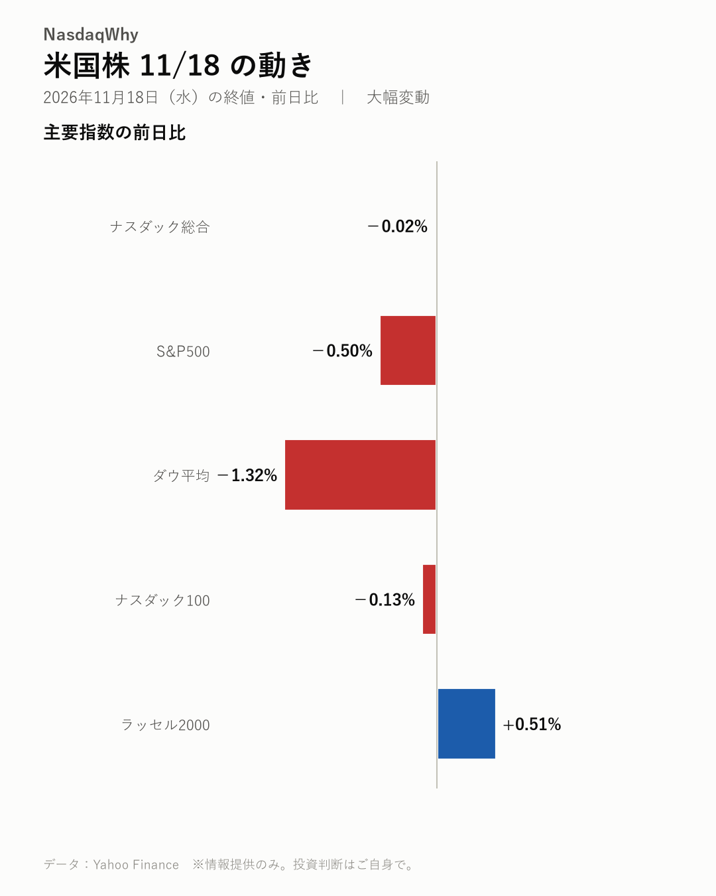
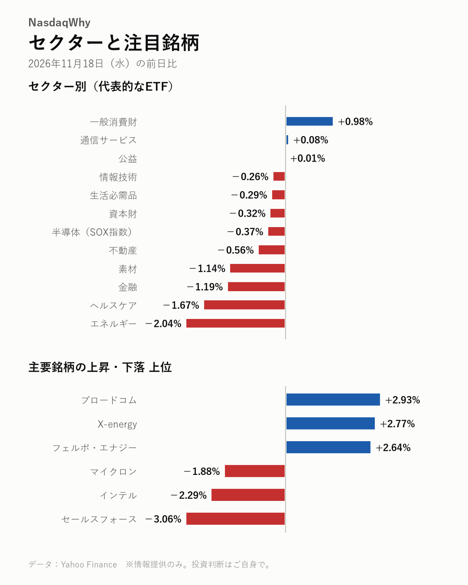

11/18の米国株：エヌビディアは好決算、なのになぜ株価は下がった？
2026年11月18日（水）の米国市場（日本時間の翌朝更新） ｜ 大幅変動
今日の疑問
エヌビディアは好決算、なのになぜ株価は下がった？
ブルームバーグによると、エヌビディアの決算を受けた上昇は途中で失速し、株価は-1.70%となった。MarketWatchは、同社への監視の強まりと景気・金利の要因を不安材料に挙げる。売りの決め手はまだ分からない。次に経営体制をめぐる動きを確かめたい。

主要指数
| 名前 | 終値 | 前日比 | 騰落率 |
|---|---|---|---|
| ナスダック総合 | 24,322.71 | -5.67 | -0.02% |
| S&P500 | 7,303.98 | -36.55 | -0.50% |
| ダウ平均 | 50,089.71 | -669.71 | -1.32% |
| ナスダック100 | 26,966.18 | -35.60 | -0.13% |
| ラッセル2000 | 2,715.75 | +13.88 | +0.51% |
なぜ動いた？
- エヌビディアは強い決算を示したが、上昇は続かず株価は-1.70%。AI向けクラウド企業の株にも売りが広がった（出典：Bloomberg.com、MarketWatch、CNBC）
- FOMC議事要旨で、当局者が追加利上げを想定していたことが分かった。ウォラー理事も大幅な利上げに触れ、利上げへの警戒がくすぶった（出典：CNBC、MarketWatch、CNBC）
- NANDのスポット価格（市場の取引値）が下がった。供給過剰への懸念から、マイクロンは-1.88%と売られた（出典：Tom's Hardware、TrendForce、24/7 Wall St.）
深掘り：大きく動いた背景
エヌビディアの好決算でも、株式相場は支えられなかった。ダウ平均は-1.32%、S&P500は-0.50%と下げた。ナスダック総合は-0.02%で横ばい圏。エヌビディアは記録的な売上と強い見通しを示したが、株価は-1.70%と下げた。 ブルームバーグによると、決算を受けた上昇は途中で失速した。CNBCは、CoreWeaveなどAI向けクラウド企業の株も連れ安になったと報じた。MarketWatchは、強い数字が冷ややかに受け止められた背景に、同社への監視の強まりと景気・金利の要因を挙げる。暫定CEOがインタビューに応じるなど、経営体制をめぐる話題も続く。 金利の面では、FOMC議事要旨が公表された。複数の当局者が追加利上げを想定し、AIが物価に及ぼす影響を懸念していた。ウォラー理事は大幅な利上げの可能性にも触れた。ただ米10年債利回りは前日比-0.031ポイントと低下し、債券市場の反応は限られた。 メモリーでは、NANDの取引価格の下落が続く。消費者向けの供給過剰が背景で、マイクロンは-1.88%と売られた。小型株は逆に強く、ラッセル2000は+0.51%と上げた。 ダウ平均がここまで下げた決め手は、材料からはまだ分からない。エネルギーやヘルスケアが下げた理由も見当たらない。次はAnthropic上場後の値動きと、次回FOMCの判断を確かめたい。
セクター
エネルギーが-2.04%と下げを主導した。原油先物の下落と歩調を合わせたが、明確な材料は見当たらない。ヘルスケアは-1.67%、金融は-1.19%。一般消費財は+0.98%と上げた。
- 騰落率の高い順：一般消費財 +0.98%、通信サービス +0.08%、公益 +0.01%
- 騰落率の低い順：エネルギー -2.04%、ヘルスケア -1.67%、金融 -1.19%

注目銘柄
エヌビディアは-1.70%。好決算後に買いが続かなかった。マイクロンは-1.88%で、NAND価格の下落が重荷だ。ブロードコムは+2.93%、アマゾンは+1.84%と上げたが、明確な材料は見当たらない。
- 上昇：ブロードコム（AVGO）+2.93%、X-energy（XE）+2.77%、フェルボ・エナジー（FRVO）+2.64%
- 下落：セールスフォース（CRM）-3.06%、インテル（INTC）-2.29%、マイクロン（MU）-1.88%
半導体トピック
- 消費者向けNANDのスポット価格が下落し、供給過剰が意識されている（Tom's Hardware、TrendForce）
- エヌビディアはサムスン電子とSK hynixからHBM4の調達を進める（파이낸셜뉴스）
- TrendForceによると、グーグルはTPU向けHBMの直接購入を検討している（TrendForce）
関連市場
| 名前 | 終値 | 前日比 | 騰落率 |
|---|---|---|---|
| 米10年債利回り | 5.072% | -0.031pt | ― |
| ドル円 | 159.22 | -0.30 | -0.19% |
| 金先物 | 3,758.10 | -106.10 | -2.75% |
| 原油先物(WTI) | 82.94 | -3.07 | -3.57% |
| ビットコイン | 62,352.96 | -2,540.98 | -3.92% |
米10年債利回りは前日比-0.031ポイントと低下した。ドル円は-0.19%。金先物は-2.75%、原油先物(WTI)は-3.57%と下げた。ビットコインも-3.92%と売られた。
今後の注目
- 12/9（水） FRBの次回FOMCでの金融政策発表。議事要旨で出た追加利上げ論の行方（公式発表）
- AnthropicのナスダックでのIPO。公開価格は想定の範囲を上回った（CNBC）
- NANDの契約価格の動向。バンク・オブ・アメリカは値下がりを予想する（Tom's Hardware）
出典（見出し）
- Bloomberg.com：Stocks Fall as Nvidia’s Earnings Rally Sputters: Markets Wrap（記事）
- MarketWatch：What’s next for the AI trade after Nvidia’s blowout results are met with a shrug（記事）
- CNBC：Nvidia sinks after earnings, dragging down neoclouds CoreWeave, Iren（記事）
- CNBC：Fed officials expect more rate hikes, worry about AI impact on inflation, minutes show（記事）
- MarketWatch：Fed minutes show growing unease about the outlook for inflation（記事）
- CNBC：Fed’s Waller says central bank may need to ‘shock people’ with half-point rate hike（記事）
- Tom's Hardware：SSDs, laptops, and phones may get cheaper as consumer NAND spot pricing drops 20% — Bank of America expects contract price drops, report cites oversupply in consumer market amid declining demand and growing Chinese competition（記事）
- TrendForce：[Insights] Memory Spot Price Update: NAND Spot-Contract Price Gap Exceeds 20% amid Weak Demand（記事）
- 24/7 Wall St.：SanDisk and Micron Fall 4% as GF Securities Cuts NAND Price Forecast and Warns of a Glut; SK Hynix Dips（記事）
- 파이낸셜뉴스：NVIDIA Continues to Secure Long-Term Memory Supply... HBM4 Supply From Samsung and SK hynix Gains Momentum（記事）
- TrendForce：[News] Google Reportedly Eyes Direct HBM Purchases for TPUs, Reducing Broadcom-Related Costs（記事）
- CNBC：Anthropic prices IPO at $83 per share, above expected range, source tells CNBC（記事）
データ：Yahoo Finance
📝 note でも読めます（図つき・まとめ）：note.com/nasdaqwhy